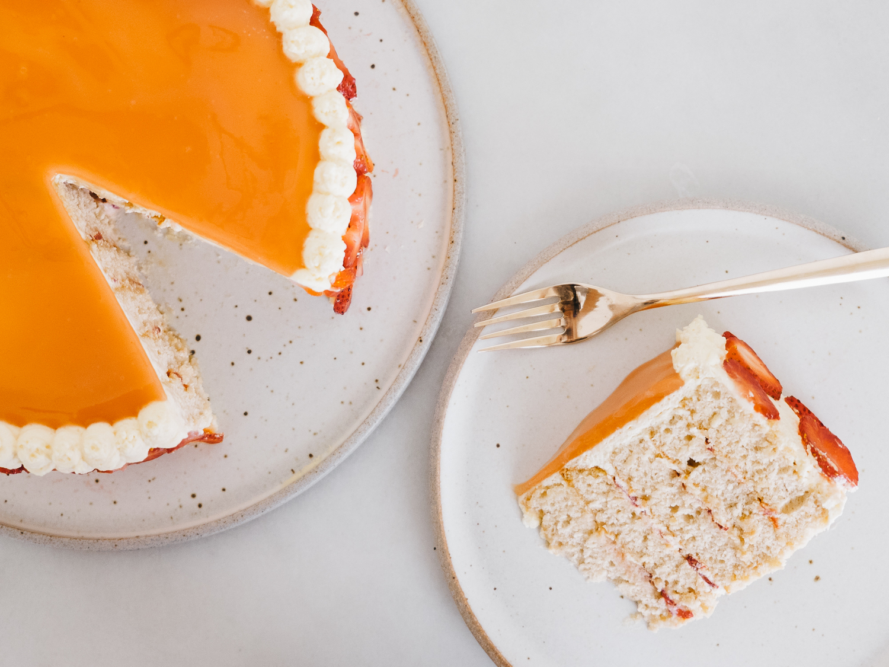

When I think about growing up in Hawai'i, I recall the people, the aloha spirit, warm weather and sand between my toes, but above all, I reminisce about the food... Sean Na'auao got it right. Here, I chose three dessert recipes from Alana Kysar's (another local girl) food blog: FixFeastFlair. Be sure to check out her new cookbook, Aloha Kitchen, if you like these recipes and want to learn more about the ~best~ cuisine ever.
First up, we have mochi brownies - a delectable mix between, well, sticky mochi and the quintessential brownie! With rich chocolate notes, they are perfect for a bit of indulgence when your sweet tooth calls. This recipe is also quick and simple.
Preheat the oven to 350°F. Grease an 8 by 8-inch baking pan with butter or neutral oil and set aside.
In a bowl, whisk together the butter, eggs, milk, and vanilla extract. In another larger bowl, whisk together the mochiko, cocoa powder, sugar, baking soda, espresso powder (if using) and kosher salt. Pour the wet ingredients into the dry ingredients and whisk until smooth.
Pour the mixture into the prepared pan and rap the pan on the counter a couple of times to bring any air bubbles up to the surface. Evenly sprinkle the chopped chocolate on the top.
Bake until the mochi is set and starts to pull away from the edges of the pan, about 70 to 75 minutes. The center should not be jiggly when it’s done. Insert a toothpick into the center to test doneness; it’s done when it comes out clean or with a few little crumbs. Set the pan on a wire rack and let cool completely before slicing into 16 squares using a very sharp or plastic knife to minimize sticking. If the knife seems to be sticking, rub it with a little unsalted butter or neutral oil. Store in an airtight container at room temperature for up to 3 days.
The next recipe is for ono-licious haupia (coconut pudding) hand pies (for the locals, just like the ones from McDonald's - yum). The pastry is from The New Sugar and Spice, and it is all you can ask for: golden, buttery, flaky, melt-in-your-mouth delicious.
The recipe makes double the amount of filling needed. This way, you can use half to fill the pastries and enjoy the other half in its traditional chilled form.
In a saucepan, whisk together the milk, 18 oz (one can plus 1/2 cup) coconut milk, and the sugar. In a small bowl, whisk the cornstarch with the water, then whisk in the remaining 1/2 cup of coconut milk. Over high heat, bring the milk mixture to a boil, then reduce to low to simmer. Slowly whisk in the cornstarch mixture. Continue whisking until mixture resembles a thick glue, about 3 minutes.
Pour the pudding into an 9 by 13-inch baking pan and spread with a spatula to smooth. Refrigerate for 2 to 3 hours or until completely set.
To prepare the pastry, combine the flour, salt, and butter pieces in a large bowl. (Make sure the butter pieces are ¼ inch or smaller.) Add 6 tablespoons of the water and mix with a fork just until the dough comes together. Add 1 to 2 more tablespoons water if you need to, but stop before the dough gets too wet. Turn the mixture out onto a lightly floured work surface. It should just hold together when you squeeze it in your hand. With a lightly floured rolling pin, shape the dough into a 12 by 6-inch rectangle with a short side nearest you.
Fold the dough into thirds like a letter. (Fold the bottom third up and then the top third down over the bottom third.) Use a bench scraper to help lift and fold the dough if necessary. At this point, the dough will be very rough and shaggy. As you roll and fold the dough, it will come together. Rotate the dough so that the folded edge is to the left. Repeat rolling and folding two more times, lightly flouring the surface as necessary. Wrap the dough tightly with plastic wrap and refrigerate for at least 1 hour. Repeat the entire process one more time for a grand total of six turns. Wrap the dough well and refrigerate until cold, about 4 hours.
Divide the dough into two equal pieces. Working with one piece at a time, roll the dough on a lightly floured surface into a 8 by 15-inch rectangle. Cut the dough into twelve 4 by 2 1/2-inch rectangles. Repeat with the remaining dough. Place all rectangles on a parchment lined baking sheet, laying an additional sheet of parchment for more layers if necessary. Cover with plastic wrap and refrigerate until ready to use.
Preheat the oven to 400°F.
Cut the haupia into 2 1/2 by 1 1/2-inch rectangles (reserve the rest for eating).
In a small bowl, whisk together the egg yolk and water. Lay out 6 dough rectangles on one of the parchment lined baking sheets. Place one haupia rectangle in the center of each dough rectangle. Brush edges with egg wash then top each rectangle with another dough rectangle. Use your hands to carefully seal all the edges, encasing the haupia, then use a fork to press the edges. This will further seal the edges. Using a paring knife, make a few slits in the top of each pie to vent the steam. Chill the pies for 20 minutes.
Repeat process with remaining dough. Brush the tops of the chilled pies with egg wash and bake until puffed and golden brown, 20 to 25 minutes. Repeat with remaining pies. Let pies cool slightly on a rack.
To make the glaze, whisk the powdered sugar and salt together with the coconut milk and vanilla bean paste. The glaze should resemble a thick glue (similar to the consistency of the warm haupia from earlier). Add more milk if necessary, teaspoon by teaspoon. Drizzle the glaze over the warm pies.
And...we arrive at the finale! The chiffon style brings a delicate, airy texture to this cake. In Hawai'i, finding strawberry guavas along a hiking trail is a treat, and the sweet juice gives this cake an insta-worthy coral color. Alana advises that the recipe looks much harder than it actually is...so, go for it! (because those vertical stripes are totally worth it!)
The recipe is adapted from Guava Rose, and the rolling method is from Le Jus d'Orange.
Pour entire carton of guava nectar juice into a large pot and heat on high until reduced down to 3 cups (reduced down to less than half). Should take 20-30 minutes. Cool at room temperature, then transfer to a covered vessel for storage and move to fridge to chill completely.
For the cake, butter a rimmed baking sheet, then line the bottom with parchment paper. Trim edges to fit bottom. Preheat the oven to 350° F.
In the bowl of a stand mixer, fitted with a whisk attachment, whisk the egg whites at medium speed until they become a little frothy, then add the cream of tartar. Continue on whisking on medium for 2 to 3 minutes medium speed or until the volume has doubled. Once doubled, increase speed to high and slowly stream in 1/2 cup granulated sugar, while keeping the mixer on. Continue whipping until soft peaks that can hold their shape form (about a minute). Reserve for use later.
In a medium mixing bowl, whisk together flour, 3/4 cup granulated sugar, baking powder, and salt. Add in oil, egg yolks, guava nectar concentrate, and vanilla extract. Whisk until thoroughly combined, about 2 to 3 minutes.
Add 1/4 of the egg whites to the flour mixture and gently fold in. Think about drawing a 'J' as you fold the egg whites in and turn your bowl a quarter turn each time. Repeat 3 more times until all the eggs whites have been gently folded in. The batter should be a uniform color. You shouldn't see any white streaks after all the egg whites have been folded in. If necessary, use your spatula to gently spread/blend any white streaks into the batter, being careful to not to stir (as this would deflate the air bubbles you worked so hard to create earlier).
Pour batter into the prepared cake pan. Bake for 15-16 minutes, or until toothpick inserted into the center comes out clean.
Let cool in pan for 5 minutes, then lightly dust top of cake with powdered sugar before inverting onto a clean, tea towel. Remove parchment paper then lightly dust that side of the cake with powdered sugar. Gently roll, starting from the shorter edge, to create a very loose roll. This shapes the cake without causing any cracks. Cool completely at room temperature.
For the whipped cream, whip the cream in an electric mixer until barely stiff. Add the guava nectar concentrate and whip until stiff. Transfer to the refrigerator to chill until ready to use.
For the glaze, in a small saucepan, whisk cornstarch into the nectar concentrate. Turn on to medium-high and cook until thickened and bubbling, this should happen quickly (1-2 minutes). Make sure to whisk frequently to prevent clumps. Allow to cook one more minute. Immediately remove from heat and pour into a shallow bowl to cool mixture to room temperature. This will take around 20 to 30 minutes. Cover with plastic wrap and chill about 20 minutes, until it is the consistency of thickened gelatin—no firmer.
Start the assembly! When cake roll is at room temperature, gently unroll it then cut cake into 4 even strips (using a sharp knife), cutting lengthwise (hotdog style). I recommend using a ruler for best results. Separate strips, to make sure they aren't stuck to the tea towel and to avoid placing strawberries on the edges of your strips.
Spread a thin layer of guava whipped cream across the surface with your offset spatula. Evenly distribute a layer of strawberry slices (cut crosswise).
Starting with one strip, roll inward. When you get to the end of your first roll, simply pick it up and place it right on top of the edge of the next strip. Roll the new strip over the roll you have already created. Repeat with every strip. Soon, your roll will be big enough that a new strip won’t even cover one circumference of the roll.
When you’ve reached the last roll, simply gently tip it over roll and place it on its circle-face on a platter or cake stand.
Finish by frosting all over with guava whipped cream, using an offset spatula. Be sure to reserve a few tablespoons of whipped cream to pipe onto the top edge. Spoon remaining whipped cream into piping bag (fitted with round tip) and gently pipe dots onto the top edge of the cake. Refrigerate for 30 minutes.
Quickly whisk up the chilled guava glaze. Pour glaze in a stream over the middle of the top of the cake. Using an offset spatula, gently smooth to edge being careful not to get any whipped cream into the glaze.
Decorate bottom edges of cake with fresh strawberry slices (cut vertically).
Cover and chill for at least 2 hours before serving.